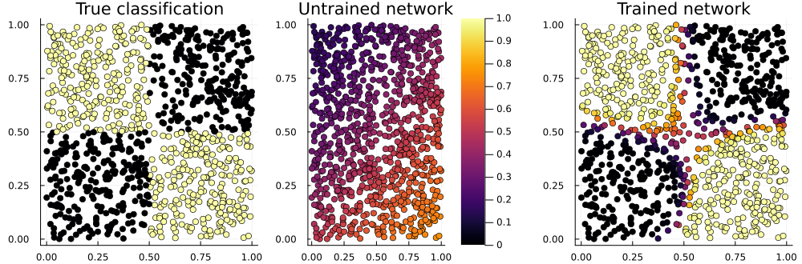

A Neural Network in One Minute
Train a small neural network to predict which points in a unit square have exactly one coordinate greater than 0.5. This is the XOR classification problem.
For a step-by-step introduction to models and training, start with Fitting a Straight Line.
Train on CPU
Install Flux with ] add Flux at the Julia prompt, then run this example.
using Flux, Random
Random.seed!(42)
x_train = rand(Float32, 2, 1024)
x_test = rand(Float32, 2, 256)
xor_labels(x) = [xor(a > 0.5f0, b > 0.5f0) for (a, b) in eachcol(x)]
classes = [true, false]
y_train = Matrix{Float32}(Flux.onehotbatch(xor_labels(x_train), classes))
y_test = xor_labels(x_test)
device = cpu_device()
model = Chain(Dense(2 => 8, tanh), Dense(8 => 2)) |> device
scores_before = cpu(model)(x_test) # for the plot below
loader = Flux.DataLoader((x_train, y_train); batchsize=64, shuffle=true) |> device
loss(m, x, y) = Flux.logitcrossentropy(m(x), y)
opt_state = Flux.setup(Adam(0.01f0), model)
for _ in 1:100
Flux.train!(loss, model, loader, opt_state)
end
scores_after = cpu(model)(x_test)
predictions = Flux.onecold(scores_after, classes)
accuracy = sum(predictions .== y_test) / length(y_test)Flux.train! runs one epoch. It computes a gradient and updates the model for each batch, using the optimiser state created by Flux.setup. The last three lines evaluate the trained model on a separate test set.
Train on a GPU or with Reactant
Replace device = cpu_device() in the example with one of the blocks below and run it again. The example moves the model before Flux.setup, transfers one batch at a time, and uses cpu(model) to evaluate on the CPU.
Native GPU backends
For an NVIDIA GPU, install the packages with ] add CUDA cuDNN and select the device.
using CUDA, cuDNN
device = gpu_device(force=true)On AMD GPUs, install and load AMDGPU. On Apple Silicon, install and load Metal. Use the same gpu_device call after loading the package for your hardware. See the GPU guide for setup details.
Compiled training with Reactant
Install Reactant with ] add Reactant and select a Reactant device.
using Reactant
device = reactant_device()Flux.train! compiles the first training step and reuses it for the fixed-size batches in this example. Reactant can run the compiled step on CPU or a supported accelerator. See the Reactant guide for device configuration and compiled inference.
Features to Note
- The batch dimension comes last. The
2×1024training matrix holds 1024 observations, one per column. - The model is callable as
model(x). EachDenselayer stores its own parameters. The final layer produces two scores per observation, one for each class.logitcrossentropytakes these scores and the one-hot targets. - Use
trainstep!to update the model one batch at a time and read the loss. The training guide shows how to log metrics, write a custom loop, and schedule the learning rate.
To start from pretrained weights, see Metalhead.jl.
Plot the predictions
The panels show the XOR labels and the predicted probability of true before and after training.

To plot your own results, install Plots with ] add Plots. The first row of softmax(scores; dims=1) gives the probability of true, the first class in classes.
using Plots
prob_before = softmax(scores_before; dims=1)[1, :]
prob_after = softmax(scores_after; dims=1)[1, :]
x1, x2 = x_test[1, :], x_test[2, :]
p_true = scatter(x1, x2; marker_z=y_test, title="True classification", legend=false)
p_raw = scatter(x1, x2; marker_z=prob_before, title="Untrained network", clims=(0, 1), legend=false)
p_done = scatter(x1, x2; marker_z=prob_after, title="Trained network", clims=(0, 1), legend=false)
plot(p_true, p_raw, p_done; layout=(1, 3), size=(1000, 330))